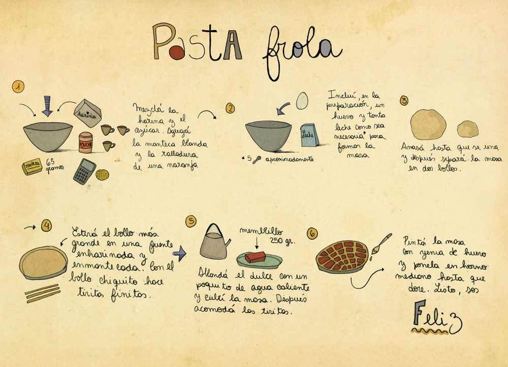
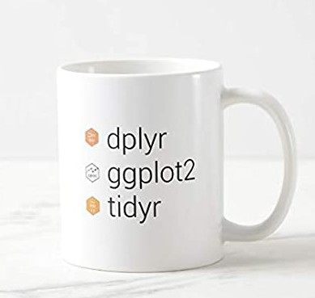
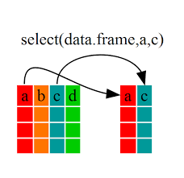

6 {dplyr}
Recordemos la sintaxis R base
x <- c(1, 2, 3, 4)
sqrt(sum(x))Como sería su equivalente bajo la sintaxis de tidyverse?

library(tidyverse)x %>% sum %>% sqrtYa tuvimos un primer panorama de la visualización de datos con ggplot2, que es parte el “universo ordenado”.
Con el avance de nuestro trabajo con R iremos entendiendo el gran maridaje que tienen los paquetes entre si.

Empecemos con uno de los mas potentes paquetes del ecosistema tidyverse:

Para eso importemos el dataset balcarce desde la carpeta data
bce_met_raw <- rio::import("data/datos_curso.xls", sheet ="bce_met")
str(bce_met_raw)dplyr is a grammar of data manipulation, providing a consistent set of verbs that help you solve the most common data manipulation challenges:
6.1 mutate()
Son varias las manipulaciones que podemos realizar con dplyr
- Agregar nuevas variables en funcion de otras pre-existentes

agreguemos la temperatura media en base a la tmin y tmax
bce_met0 <- bce_met_raw %>%
mutate(tmean = (tmax + tmin) / 2)
head(bce_met)- Modificar variables existentes
pasemos “fecha” de formato caracter a su formato correcto
Acoplemos a lubridate
library(lubridate)
bce_met1 <- bce_met0 %>%
mutate(date = dmy(fecha))
head(bce_met1)ya que estamos extraigamos mas columnas relacionadas a la fecha
bce_met1 <- bce_met1 %>%
mutate(month = month(date),
julian = yday(date))
head(bce_met1)creamos una nueva columna en base a una condición
if_else
bce_met1 <- bce_met1 %>%
mutate(frost = if_else(tmin<=0, TRUE, FALSE))
head(bce_met1)6.2 select()
Selecciona variables basadas en sus nombres

Descartemos “fecha”
Opción 1
bce_met2 <- bce_met1 %>%
select(date, month, tmean, tmax, tmin, rad, frost)
head(bce_met2)Opción 2
bce_met2 <- bce_met1 %>%
select(-fecha)
head(bce_met2)Opción 3
bce_met2 <- bce_met1 %>%
select(date, month, contains("tm"), rad, frost)
head(bce_met2)6.3 filter()
Filtra filas en base a alguna condición
veamos que dias tuvieron heladas
bce_met2 %>%
filter(tmin<=0)bce_met2 %>%
filter(frost==TRUE)6.4 count()
Cuenta el numero de observaciones por grupo
bce_met2 %>%
count(frost)- se puede agregar mas niveles de agrupamiento
bce_met2 %>%
count(month, frost)
bce_met2 %>%
count(frost, month)6.5 summarise()
 Reduce multiples valores a valores resumenes. Generalmente combinado con
Reduce multiples valores a valores resumenes. Generalmente combinado con group_by()
para cada mes: cuantos dias helaron y cual fue la temp media
bce_met2 %>%
group_by(month) %>%
summarise(tmean=mean(tmean),
n_frost=sum(frost)) -> bce_sum
bce_sum6.6 arrange()
Cambia el orden de las filas
bce_sum %>%
arrange(n_frost)
bce_sum %>%
arrange(-n_frost)Ya que hicimos tantas modificaciones a los datos es un buen momento para guardar en formato .Rdata
save(bce_met_raw, bce_met2, bce_sum, file="data/datos_curso.Rdata")Gráfico de Temperaturas media
ggplot(bce_met2) +
aes(x=date, y=tmean)+
geom_line() +
scale_x_date(date_breaks = "1 month", date_labels = "%b")+
theme(axis.text.x = element_text(angle=45, hjust = 1)) +
labs(x="", y="Mean temperature (ºC)") +
theme_bw() +
theme(axis.text.x = element_text(angle=45, hjust = 1))nos interesa visualizar los meses en que se desarrolla el trigo (de junio a diciembre)
ggplot(bce_met2) +
aes(x=date)+
geom_line(aes(y = tmax, col = "Máxima"), alpha=.5) +
geom_line(aes(y = tmin, col = "Mínima"), alpha=.5) +
scale_colour_manual("Temperatura",
values = c("Media" = "black",
"Máxima" = "red",
"Mínima" = "blue"))+
geom_point(data = bce_met2 %>% filter(tmin<3),
aes(x=date, y=0),
shape=8, col="blue") +
theme_bw() +
scale_x_date(date_breaks = "1 month", date_labels = "%b",
limits = as.Date(c("2018-06-01", "2018-31-12")))+
theme(axis.text.x = element_text(angle=45, hjust = 1))6.7 {forcats}
El paquete {forcats} hace un aporte clave para la manipulación de los niveles de un factor. Retomemos un ejemplo de tipico de visualización con iris
iris %>%
ggplot() +
aes(x=Species, y=Sepal.Length)+
geom_boxplot(fill="gray90")+
geom_jitter()+
labs(x= "Species", y="Sepal length (cm)") +
theme_bw()Reordenar niveles de un factor
iris %>%
mutate(
Species= fct_relevel(Species,"virginica")
) %>%
ggplot() +
aes(x=Species, y=Sepal.Length)+
geom_boxplot(fill="gray90")+
geom_jitter()+
labs(x= "Species", y="Sepal length (cm)") +
theme_bw()Renombrar niveles de un factor
iris %>%
mutate(
Species= fct_recode(Species,
"Setosa"="setosa",
"Versicolor"="versicolor",
"Virginica"="virginica")
) %>%
ggplot() +
aes(x=Species, y=Sepal.Length)+
geom_boxplot(fill="gray90")+
geom_jitter()+
labs(x= "Species", y="Sepal length (cm)") +
theme_bw()6.8 join()
Retomemos los datos de bce_met2 que por suerte los tenemos guardados como .Rdata para un rapido retome (nos ahorramos los pasos anteriores)
# paquetes que iremos a usar en esta sesion
pacman::p_load(tidyverse, lubridate, rio, janitor, nasapower)
# datos guardados en la sesion previa
load("data/datos_curso.Rdata")Nos acaban de pasar los datos de lluvias de Balcarce en 2018
bce_lluvias_raw <- rio::import("data/datos_curso.xls", sheet ="bce_lluvias")seria interesante poder acoplar a nuestro dataset bce_met2

Veamos los datos meteorologicos de Balcarce:
bce_met2
bce_lluvias_raw Si hacemos la misma conversion fecha a date tendriamos una columna en comun
bce_lluvias <- bce_lluvias_raw %>%
mutate(date = dmy(fecha)) %>%
select(-fecha)
str(bce_lluvias)Ahora hagamos uso de left_join() para que matcheen las filas y se peguen la columna de lluvia a bce_met2
bce_full <- bce_met2 %>%
left_join(bce_lluvias, by="date")
str(bce_full)
# veamos otra utilidad mas de mutate!
bce_full <- bce_met2 %>%
left_join(bce_lluvias, by="date")
mutate(pp = replace_na(pp, 0))
str(bce_full)ggplot(bce_full) +
aes(x=date)+
geom_col(aes(y = pp)) +
theme_bw() +
scale_x_date(date_breaks = "1 month", date_labels = "%b",
limits = as.Date(c("2018-06-01", "2018-31-12")))+
theme(axis.text.x = element_text(angle=45, hjust = 1))